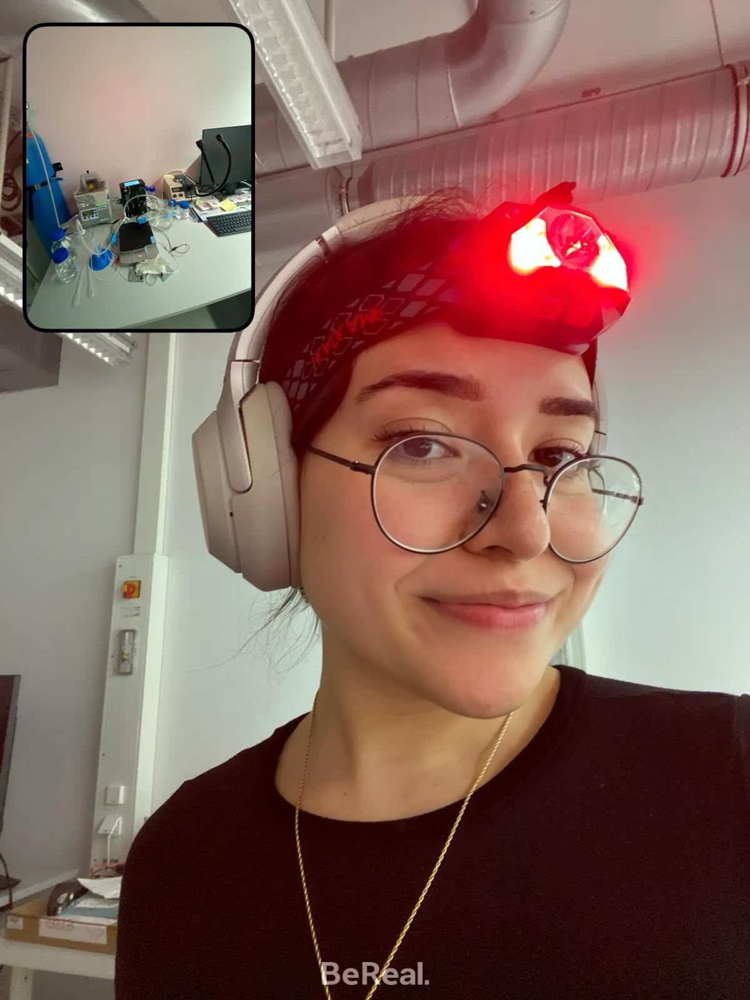

molecular bioengineer / neural interfaces / biological intelligence
I can trace my interest in bioengineering back to a slightly unusual place: Transcendence.
I watched it before I really knew what bioengineering could be. I was fascinated by its imagined boundary between biology, computation and human intelligence.
Uploading a human mind into a computer was obviously science fiction. The question underneath it stayed with me:
During my Bachelor's in Bioengineering, that question started to feel considerably less fictional.
I discovered organ-on-chip technology. What fascinated me even more was the idea of a patient-on-chip.
The possibility of taking cells from an individual and building an experimental system that reproduces aspects of that person's biology felt extraordinary.
Suddenly, engineering technology around living systems was not science fiction at all. It was experimental biology.
From there, I knew I wanted my research to stay somewhere around this interface between biology and engineered platforms.

That interest eventually brought me to neural electrophysiology.
At DZNE in Dresden, I worked with human olfactory epithelium and rat olfactory bulb co-cultures using MEA electrophysiology.
Later, during my Master's research at TU Dresden / CRTD, I worked with adult zebrafish retina on HD-MEAs.
There was something fascinating about placing living neural tissue on a chip and being able to listen to its electrical activity.
Working with living preparations also taught me the less glamorous part of electrophysiology.
Tissue has to remain viable. Stimulation has to be reproducible. Biological variability is unavoidable. Artifacts can look convincing. Good recordings often come after a lot of troubleshooting.
But recording was only part of what interested me.
If we can record from a neural network, we can also give it input. We can stimulate it, change its environment and observe how it responds.
Eventually, we can ask whether those responses themselves change with experience.
At first, I was interested in what we could record from living neural systems.
Eventually, I became more interested in what happens when communication goes both ways.
A closed loop.
At that point, the electrode array is no longer simply measuring biology.
It becomes part of the environment the biological system is interacting with.
After my Master's, I joined MaxWell Biosystems.
Being surrounded by HD-MEA technology exposed me to neural models and applications far beyond the preparations I had worked with myself.
That was where I first encountered Organoid Intelligence.
It did not feel like discovering a completely new subject. It felt like finding the place where several things I had already been interested in finally met.
What draws me to brain organoids is not limited to biological computing.
They can also provide experimentally accessible human neural models for studying development, neurodegenerative disease, neurotoxicity and responses to pharmacological intervention.
These directions are closely connected to functional electrophysiology.
Whether the question concerns learning, disease progression or drug response, we still need to understand what the neural network is doing, how that activity changes over time and what happens when we perturb it.
At the end of Transcendence, one question remains strangely unresolved.
Was what existed inside the machine really Will? Was it a copy, an artificial intelligence that believed it was him, or something entirely new?
That question interests me much more now than when I first watched the film.
Before asking whether a machine, or a biological neural system grown in a laboratory, could ever be conscious, there is a much more difficult question:
How do we distinguish consciousness from intelligence, learning, memory, adaptation, or increasingly complex responses to an environment?
I do not think Organoid Intelligence answers those questions.
I find it fascinating that experimental biology is beginning to create systems that make us ask them more carefully.
some questions have answers. some have several. that is the interesting part.
I don't want to simulate a brain.
I want to understand what living neural networks can do when we give them something to interact with.